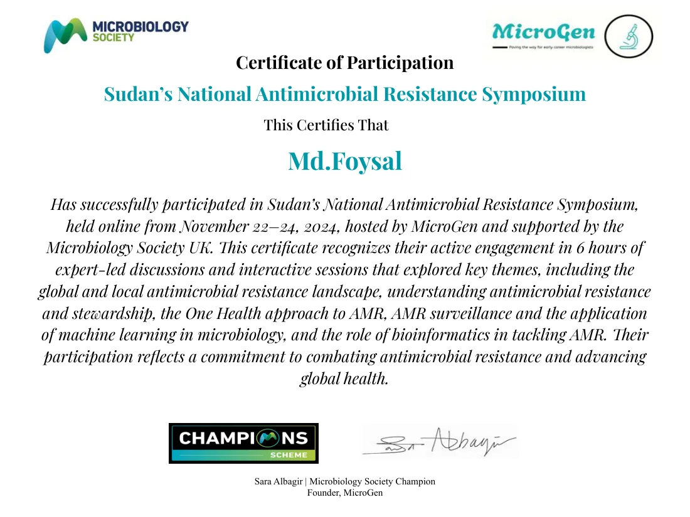

Symposium2024
Sudan’s National Antimicrobial Resistance Symposium
MicroGen / Microbiology Society
Scientific engagement
Participation in national/international discussions on infectious disease and antimicrobial resistance.
22–24 November 2024
The symposium was held online and hosted by MicroGen with support from the Microbiology Society UK. Foysal’s certificate documents six hours of participation.
Topics included AMR surveillance, stewardship, One Health, applications of machine learning in microbiology and bioinformatics approaches to AMR.

MicroGen / Microbiology Society